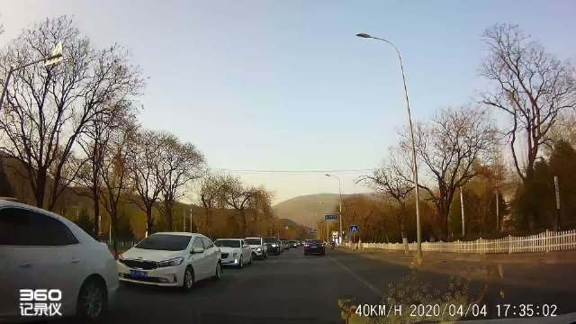

多大点事儿啊。

ETF拯救世界
2020-04-06
ETF拯救世界
2020-04-06
逆行扣3分，骂人能不能算寻衅滋事扣9分？
@北京人不知道的北京事儿:
网友投稿：北京昌平区水库路，一辆银色别克逆行，前面的车差点和它撞上，被迫压上自行车道给它让行。我没让，他摇下车窗骂我、对我吐痰还竖中指。。。京N333D1！这样的司机该怎么处罚？
 丶李亚轩的微博视频
丶李亚轩的微博视频

93万次播放
00:26
ETF拯救世界
2020-04-06
年初说的送礼物，忙到今天才来得及统计。请公众号的以下朋友去公众号私信我拿礼物。
五篇评论沙发：（每位500元京东购物卡）
方枪枪、贺云仙、小火人、宁静致远、阳光
五篇评论第六（2.3大盘收盘个位数）：（每位500元京东购物卡）
Xswl、KWOK、黄鑫、想一想、hx
五篇打赏最多：（一位苹果airpods 2 耳机，四位500元京东购物卡）
可爱的嘟嘟、王赤峰、Frank、蓝兰、郑焱
五篇第六位打赏（2.3大盘收盘个位数）：（每位500元京东购物卡）
孔祥熙、John、小清Feel、*ST秋秋、才才
五篇评论沙发：（每位500元京东购物卡）
方枪枪、贺云仙、小火人、宁静致远、阳光
五篇评论第六（2.3大盘收盘个位数）：（每位500元京东购物卡）
Xswl、KWOK、黄鑫、想一想、hx
五篇打赏最多：（一位苹果airpods 2 耳机，四位500元京东购物卡）
可爱的嘟嘟、王赤峰、Frank、蓝兰、郑焱
五篇第六位打赏（2.3大盘收盘个位数）：（每位500元京东购物卡）
孔祥熙、John、小清Feel、*ST秋秋、才才